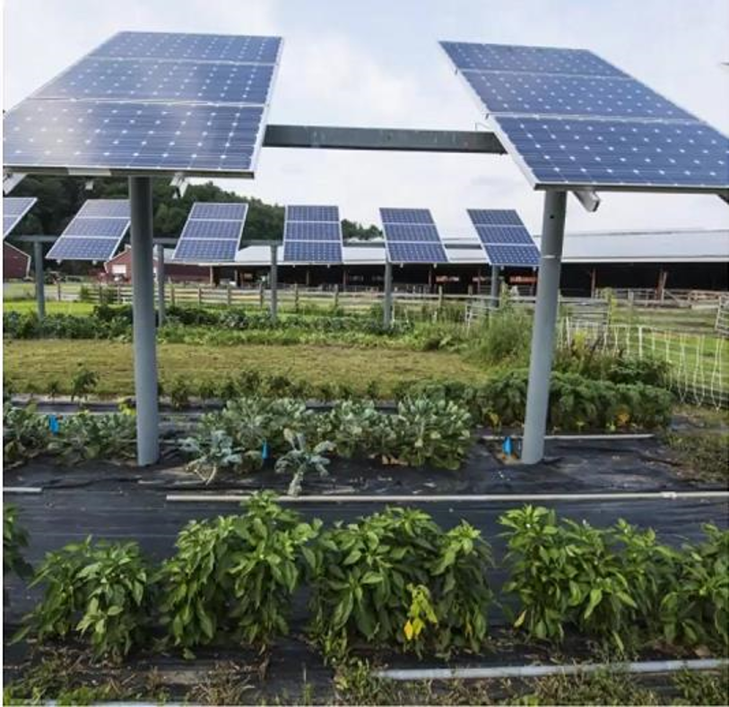
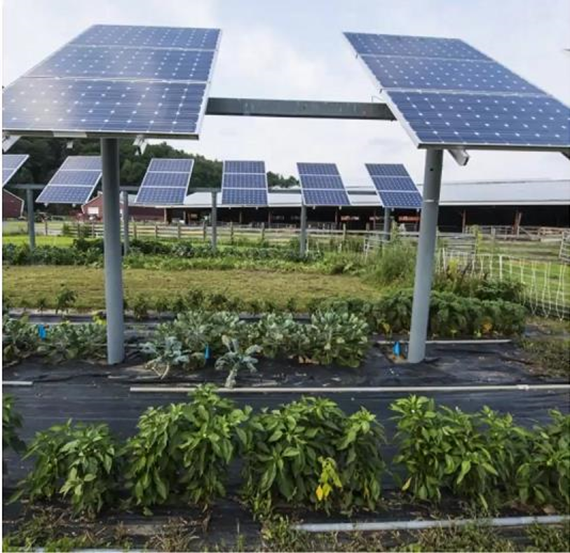
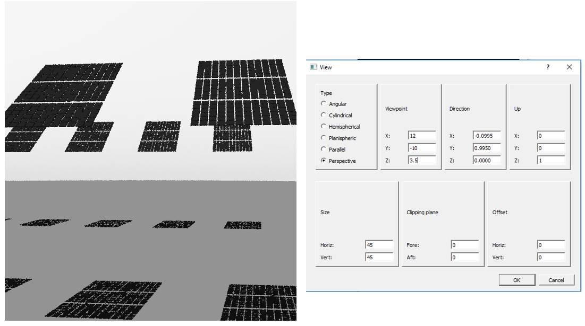

[ ]:
# This information helps with debugging and getting support :)
import sys, platform
import pandas as pd
import bifacial_radiance as br
print("Working on a ", platform.system(), platform.release())
print("Python version ", sys.version)
print("Pandas version ", pd.__version__)
print("bifacial_radiance version ", br.__version__)
11 - AgriPV Systems#
This journal shows how to model an AgriPV site, calculating the irradiance not only on the modules but also the irradiance received by the ground to evaluate available solar ersource for plants.
We assume that bifacia_radiacne is already installed in your computer. This works for bifacial_radiance v.3 release.
These journal outlines 4 useful uses of bifacial_radiance and some tricks:
Creating the modules in the AgriPV site
Adding extra geometry for the pillars/posts supporting the AgriPV site
Hacking the sensors to sample the ground irradiance and create irradiance map
Adding object to simulate variations in ground albedo from different crops between rows.
Steps:#
Generate the geometry
Analyse the Ground Irradiance
Analyse and MAP the Ground Irradiance
Adding different Albedo Section
Preview of what we will create:#
  And this is how it will look like:
 And this is how it will look like:
1. Generate the geometry#
This section goes from setting up variables to making the OCT axis. We are also adding some custom elements for the torquetubes and posts.
We’ve done this before a couple times, no new stuff here.
The magic is that, for doing the carport we see in the figure, we are going to do a 4-up configuration of modules (numpanels), and we are going to repeat that 3-UP 6 times (nMods)
[1]:
import os
from pathlib import Path
testfolder = str(Path().resolve().parent.parent / 'bifacial_radiance' / 'TEMP' / 'Tutorial_11')
if not os.path.exists(testfolder):
os.makedirs(testfolder)
print ("Your simulation will be stored in %s" % testfolder)
Your simulation will be stored in C:\Users\mprillim\sam_dev\bifacial_radiance\bifacial_radiance\TEMP\Tutorial_11
[2]:
from bifacial_radiance import *
import numpy as np
import pandas as pd
[3]:
simulationname = 'tutorial_11'
#Location:
lat = 40.0583 # NJ
lon = -74.4057 # NJ
# MakeModule Parameters
moduletype='test-module'
numpanels = 3 # AgriPV site has 3 modules along the y direction (N-S since we are facing it to the south) .
x = 0.95
y = 1.95
xgap = 2.0# Leaving 15 centimeters between modules on x direction
ygap = 0.10 # Leaving 10 centimeters between modules on y direction
zgap = 0 # no gap to torquetube.
sensorsy = 6*numpanels # this will give 6 sensors per module, 1 per cell
# Other default values:
# TorqueTube Parameters
axisofrotationTorqueTube=False # this is False by default if there is no torquetbue parameters
torqueTube = False
cellLevelModule = True
numcellsx = 12
numcellsy = 6
xcell = 0.156
ycell = 0.156
xcellgap = 0.02
ycellgap = 0.02
cellLevelModuleParams = {'numcellsx': numcellsx, 'numcellsy':numcellsy,
'xcell': xcell, 'ycell': ycell, 'xcellgap': xcellgap, 'ycellgap': ycellgap}
# SceneDict Parameters
pitch = 15 # m
albedo = 0.2 #'grass' # ground albedo
hub_height = 4.3 # m
nMods = 6 # six modules per row.
nRows = 3 # 3 row
azimuth_ang=180 # Facing south
tilt =35 # tilt.
# Now let's run the example
demo = RadianceObj(simulationname,path = testfolder)
demo.setGround(albedo)
epwfile = demo.getEPW(lat, lon) # NJ lat/lon 40.0583° N, 74.4057
metdata = demo.readWeatherFile(epwfile, coerce_year=2001)
timestamp = metdata.datetime.index(pd.to_datetime('2001-06-17 13:0:0 -5')) # Make this timezone aware, use -5 for EST.
demo.gendaylit(timestamp)
# Making module with all the variables
module=demo.makeModule(name=moduletype,x=x,y=y,numpanels=numpanels,
xgap=xgap, ygap=ygap, cellModule=cellLevelModuleParams)
# create a scene with all the variables
sceneDict = {'tilt':tilt,'pitch': 15,'hub_height':hub_height,'azimuth':azimuth_ang, 'nMods': nMods, 'nRows': nRows}
scene = demo.makeScene(module=moduletype, sceneDict=sceneDict)
octfile = demo.makeOct(demo.getfilelist())
path = C:\Users\mprillim\sam_dev\bifacial_radiance\bifacial_radiance\TEMP\Tutorial_11
Loading albedo, 1 value(s), 0.200 avg
1 nonzero albedo values.
Getting weather file: USA_NJ_McGuire.AFB.724096_TMY3.epw
... OK!
8760 line in WeatherFile. Assuming this is a standard hourly WeatherFile for the year for purposes of saving Gencumulativesky temporary weather files in EPW folder.
Coercing year to 2001
Saving file EPWs\metdata_temp.csv, # points: 8760
Calculating Sun position for Metdata that is right-labeled with a delta of -30 mins. i.e. 12 is 11:30 sunpos
Module Name: test-module
Module was shifted by 0.078 in X to avoid sensors on air
This is a Cell-Level detailed module with Packaging Factor of 0.81 %
Module test-module updated in module.json
Pre-existing .rad file objects\test-module.rad will be overwritten
Created tutorial_11.oct
If desired, you can view the Oct file at this point:
rvu -vf views:nbsphinx-math:`front`.vp -e .01 tutorial_11.oct
[4]:
## Comment the ! line below to run rvu from the Jupyter notebook instead of your terminal.
## Simulation will stop until you close the rvu window
#!rvu -vf views\front.vp -e .01 tutorial_11.oct
And adjust the view parameters, you should see this image.
Adding the structure#
We will add on the torquetube and pillars.
Positions of the piles could be done more programatically, but they are kinda estimated at the moment.
[5]:
torquetubelength = module.scenex*(nMods)
name='Post1'
text='! genbox Metal_Aluminum_Anodized torquetube_row1 {} 0.2 0.3 | xform -t {} -0.1 -0.3 | xform -t 0 0 4.2'.format(
torquetubelength, (-torquetubelength+module.sceney)/2.0)
customObject = demo.makeCustomObject(name,text)
demo.appendtoScene(radfile=scene.radfiles, customObject=customObject, text="!xform -rz 0")
name='Post2'
text='! genbox Metal_Aluminum_Anodized torquetube_row2 {} 0.2 0.3 | xform -t {} -0.1 -0.3 | xform -t 0 15 4.2'.format(
torquetubelength, (-torquetubelength+module.sceney)/2.0)
customObject = demo.makeCustomObject(name,text)
demo.appendtoScene(radfile=scene.radfiles, customObject=customObject, text="!xform -rz 0")
name='Post3'
text='! genbox Metal_Aluminum_Anodized torquetube_row2 {} 0.2 0.3 | xform -t {} -0.1 -0.3 | xform -t 0 -15 4.2'.format(
torquetubelength, (-torquetubelength+module.sceney)/2.0)
customObject = demo.makeCustomObject(name,text)
demo.appendtoScene(radfile=scene.radfiles, customObject=customObject, text="!xform -rz 0")
Custom Object Name objects\Post1.rad
Custom Object Name objects\Post2.rad
Custom Object Name objects\Post3.rad
[6]:
name='Pile'
pile1x = (torquetubelength+module.sceney)/2.0
pilesep = pile1x*2.0/7.0
text= '! genrev Metal_Grey tube1row1 t*4.2 0.15 32 | xform -t {} 0 0'.format(pile1x)
text += '\r\n! genrev Metal_Grey tube1row2 t*4.2 0.15 32 | xform -t {} 15 0'.format(pile1x)
text += '\r\n! genrev Metal_Grey tube1row3 t*4.2 0.15 32 | xform -t {} -15 0'.format(pile1x)
for i in range (1, 7):
text += '\r\n! genrev Metal_Grey tube{}row1 t*4.2 0.15 32 | xform -t {} 0 0'.format(i+1, pile1x-pilesep*i)
text += '\r\n! genrev Metal_Grey tube{}row2 t*4.2 0.15 32 | xform -t {} 15 0'.format(i+1, pile1x-pilesep*i)
text += '\r\n! genrev Metal_Grey tube{}row3 t*4.2 0.15 32 | xform -t {} -15 0'.format(i+1, pile1x-pilesep*i)
customObject = demo.makeCustomObject(name,text)
demo.appendtoScene(radfile=scene.radfiles, customObject=customObject, text="!xform -rz 0")
octfile = demo.makeOct() # makeOct combines all of the ground, sky and object files we just added into a .oct file.
Custom Object Name objects\Pile.rad
Created tutorial_11.oct
View the geometry with the posts on :#
rvu -vf views:nbsphinx-math:`front`.vp -e .01 -pe 0.4 -vp 12 -10 3.5 -vd -0.0995 0.9950 0.0 tutorial_11.oct
[7]:
## Comment the ! line below to run rvu from the Jupyter notebook instead of your terminal.
## Simulation will stop until you close the rvu window
#!rvu -vf views\front.vp -e .01 tutorial_11.oct

2. Analyse the Ground Irradiance#
Now let’s do some analysis along the ground, starting from the edge of the modules. We wil select to start in the center of the array.
We are also increasign the number of points sampled accross the collector width, with the variable sensorsy passed to moduleanalysis. We are also increasing the step between sampling points, to be able to sample in between the rows.
[8]:
analysis = AnalysisObj(octfile, demo.name)
sensorsy = 20
frontscan, backscan = analysis.moduleAnalysis(scene, sensorsy=sensorsy)
[9]:
groundscan = frontscan
[10]:
groundscan['zstart'] = 0.05 # setting it 5 cm from the ground.
groundscan['zinc'] = 0 # no tilt necessary.
groundscan['yinc'] = pitch/(sensorsy-1) # increasing spacing so it covers all distance between rows
groundscan
[10]:
{'xstart': 1.5159739062663865e-16,
'ystart': -1.237886635821746,
'zstart': 0.05,
'xinc': -1.5802346387185998e-17,
'yinc': 0.7894736842105263,
'zinc': 0,
'sx_xinc': 0.0,
'sx_yinc': 0.0,
'sx_zinc': 0.0,
'Nx': 1,
'Ny': 20,
'Nz': 1,
'orient': '-0.000 0.574 -0.819'}
[11]:
analysis.analysis(octfile, simulationname+"_groundscan", groundscan, backscan) # compare the back vs front irradiance
Linescan in process: tutorial_11_groundscan_Front
Linescan in process: tutorial_11_groundscan_Back
Saved: results\irr_tutorial_11_groundscan.csv
[11]:
({'Wm2': [707.7193666666666,
679.3139666666666,
320.71520000000004,
321.5017,
326.947,
355.2678,
703.1252000000001,
717.6289666666667,
730.9323333333333,
738.5453666666667,
744.1402333333334,
748.625,
750.1326666666668,
753.2622333333334,
754.2802333333333,
753.4847333333332,
749.6281333333333,
744.2707333333334,
730.8705333333334,
709.3668333333334],
'x': [1.515974e-16,
1.35795e-16,
1.199927e-16,
1.041904e-16,
8.838801e-17,
7.258566e-17,
5.678331e-17,
4.098097e-17,
2.517862e-17,
9.376273e-18,
-6.426073e-18,
-2.222842e-17,
-3.803077e-17,
-5.383311e-17,
-6.963546e-17,
-8.543781e-17,
-1.012402e-16,
-1.170425e-16,
-1.328448e-16,
-1.486472e-16],
'y': [-1.237887,
-0.448413,
0.3410607,
1.130534,
1.920008,
2.709482,
3.498955,
4.288429,
5.077903,
5.867377,
6.65685,
7.446324,
8.235798,
9.025271,
9.814745,
10.60422,
11.39369,
12.18317,
12.97264,
13.76211],
'z': [0.05,
0.05,
0.05,
0.05,
0.05,
0.05,
0.05,
0.05,
0.05,
0.05,
0.05,
0.05,
0.05,
0.05,
0.05,
0.05,
0.05,
0.05,
0.05,
0.05],
'r': [707.5753,
679.1962,
320.6044,
321.3819,
326.8311,
355.1729,
703.0397,
717.5341,
730.8545,
738.4874,
744.0706,
748.5612,
750.0686,
753.1605,
754.1783,
753.3657,
749.512,
744.1373,
730.7393,
709.2124],
'g': [707.7124,
679.3104,
320.7099,
321.4949,
326.9389,
355.2608,
703.1177,
717.6204,
730.9257,
738.5405,
744.1342,
748.6193,
750.127,
753.2527,
754.2706,
753.4746,
749.619,
744.2607,
730.8623,
709.3582],
'b': [707.8704,
679.4353,
320.8313,
321.6283,
327.071,
355.3697,
703.2182,
717.7324,
731.0168,
738.6082,
744.2159,
748.6945,
750.2024,
753.3735,
754.3918,
753.6139,
749.7534,
744.4142,
731.01,
709.5299],
'mattype': ['groundplane',
'groundplane',
'groundplane',
'groundplane',
'groundplane',
'groundplane',
'groundplane',
'groundplane',
'groundplane',
'groundplane',
'groundplane',
'groundplane',
'groundplane',
'groundplane',
'groundplane',
'groundplane',
'groundplane',
'groundplane',
'groundplane',
'groundplane'],
'title': 'tutorial_11_groundscan_Front'},
{'Wm2': [258.8127,
131.0589,
130.75906666666668,
130.4594,
125.61353333333334,
124.4103,
258.8127,
100.8693,
87.56585,
81.7781,
135.29413333333335,
127.25869999999999,
129.3859666666667,
258.8127,
132.0198,
133.18776666666668,
134.2764,
135.00026666666668,
135.94163333333333,
258.8127],
'x': [1.50052e-16,
1.342497e-16,
1.184474e-16,
1.02645e-16,
8.684266e-17,
7.104032e-17,
5.523797e-17,
3.943562e-17,
2.363328e-17,
7.83093e-18,
-7.971416e-18,
-2.377376e-17,
-3.957611e-17,
-5.537846e-17,
-7.11808e-17,
-8.698315e-17,
-1.027855e-16,
-1.185878e-16,
-1.343902e-16,
-1.501925e-16],
'y': [-1.225268,
-1.096232,
-0.9671961,
-0.8381601,
-0.7091242,
-0.5800882,
-0.4510523,
-0.3220163,
-0.1929803,
-0.0639444,
0.06509155,
0.1941275,
0.3231635,
0.4521994,
0.5812354,
0.7102713,
0.8393073,
0.9683432,
1.097379,
1.226415],
'z': [3.440837,
3.531189,
3.621541,
3.711893,
3.802245,
3.892597,
3.982949,
4.073301,
4.163653,
4.254005,
4.344357,
4.434709,
4.525061,
4.615413,
4.705765,
4.796117,
4.886468,
4.97682,
5.067172,
5.157524],
'r': [258.8127,
130.8674,
130.568,
130.2688,
125.3934,
124.1923,
258.8127,
100.1214,
86.4007,
80.33697,
134.2312,
126.7886,
128.908,
258.8127,
131.8432,
133.0096,
134.1148,
134.8378,
135.8387,
258.8127],
'g': [258.8127,
131.0518,
130.752,
130.4523,
125.5993,
124.3962,
258.8127,
100.7859,
87.42799,
81.59953,
135.1632,
127.206,
129.3324,
258.8127,
132.0045,
133.1724,
134.2626,
134.9864,
135.9336,
258.8127],
'b': [258.8127,
131.2575,
130.9572,
130.6571,
125.8479,
124.6424,
258.8127,
101.7006,
88.86886,
83.3978,
136.488,
127.7815,
129.9175,
258.8127,
132.2117,
133.3813,
134.4518,
135.1766,
136.0526,
258.8127],
'mattype': ['sky',
'a2.1.a5.1.0.cellPVmodule.2310',
'a2.1.a5.2.0.cellPVmodule.2310',
'a2.1.a5.3.0.cellPVmodule.2310',
'a2.1.a5.4.0.cellPVmodule.2310',
'a2.1.a5.5.0.cellPVmodule.2310',
'sky',
'a2.1.a5.0.1.cellPVmodule.2310',
'a2.1.a5.1.1.cellPVmodule.2310',
'a2.1.a5.2.1.cellPVmodule.2310',
'a2.1.a5.3.1.cellPVmodule.2310',
'a2.1.a5.4.1.cellPVmodule.2310',
'a2.1.a5.5.1.cellPVmodule.2310',
'sky',
'a2.1.a5.0.2.cellPVmodule.2310',
'a2.1.a5.1.2.cellPVmodule.2310',
'a2.1.a5.2.2.cellPVmodule.2310',
'a2.1.a5.3.2.cellPVmodule.2310',
'a2.1.a5.4.2.cellPVmodule.2310',
'sky'],
'title': 'tutorial_11_groundscan_Back'})
This is the result for only one ‘chord’ accross the ground. Let’s now do a X-Y scan of the ground.
3. Analyse and MAP the Ground Irradiance#
We will use the same technique to find the irradiance on the ground used above, but will move it along the X-axis to map from the start of one module to the next.
We will sample around the module that is placed at the center of the field.

[12]:
import seaborn as sns
[13]:
sensorsx = 20
startgroundsample=-module.scenex
spacingbetweensamples = module.scenex/(sensorsx-1)
for i in range (0, sensorsx): # Will map 20 points
frontscan, backscan = analysis.moduleAnalysis(scene, sensorsy=sensorsy)
groundscan = frontscan
groundscan['zstart'] = 0.05 # setting it 5 cm from the ground.
groundscan['zinc'] = 0 # no tilt necessary.
groundscan['yinc'] = pitch/(sensorsy-1) # increasing spacing so it covers all distance between rows
groundscan['xstart'] = startgroundsample + i*spacingbetweensamples # increasing spacing so it covers all distance between rows
analysis.analysis(octfile, simulationname+"_groundscan_"+str(i), groundscan, backscan) # compare the back vs front irradiance
Linescan in process: tutorial_11_groundscan_0_Front
Linescan in process: tutorial_11_groundscan_0_Back
Saved: results\irr_tutorial_11_groundscan_0.csv
Linescan in process: tutorial_11_groundscan_1_Front
Linescan in process: tutorial_11_groundscan_1_Back
Saved: results\irr_tutorial_11_groundscan_1.csv
Linescan in process: tutorial_11_groundscan_2_Front
Linescan in process: tutorial_11_groundscan_2_Back
Saved: results\irr_tutorial_11_groundscan_2.csv
Linescan in process: tutorial_11_groundscan_3_Front
Linescan in process: tutorial_11_groundscan_3_Back
Saved: results\irr_tutorial_11_groundscan_3.csv
Linescan in process: tutorial_11_groundscan_4_Front
Linescan in process: tutorial_11_groundscan_4_Back
Saved: results\irr_tutorial_11_groundscan_4.csv
Linescan in process: tutorial_11_groundscan_5_Front
Linescan in process: tutorial_11_groundscan_5_Back
Saved: results\irr_tutorial_11_groundscan_5.csv
Linescan in process: tutorial_11_groundscan_6_Front
Linescan in process: tutorial_11_groundscan_6_Back
Saved: results\irr_tutorial_11_groundscan_6.csv
Linescan in process: tutorial_11_groundscan_7_Front
Linescan in process: tutorial_11_groundscan_7_Back
Saved: results\irr_tutorial_11_groundscan_7.csv
Linescan in process: tutorial_11_groundscan_8_Front
Linescan in process: tutorial_11_groundscan_8_Back
Saved: results\irr_tutorial_11_groundscan_8.csv
Linescan in process: tutorial_11_groundscan_9_Front
Linescan in process: tutorial_11_groundscan_9_Back
Saved: results\irr_tutorial_11_groundscan_9.csv
Linescan in process: tutorial_11_groundscan_10_Front
Linescan in process: tutorial_11_groundscan_10_Back
Saved: results\irr_tutorial_11_groundscan_10.csv
Linescan in process: tutorial_11_groundscan_11_Front
Linescan in process: tutorial_11_groundscan_11_Back
Saved: results\irr_tutorial_11_groundscan_11.csv
Linescan in process: tutorial_11_groundscan_12_Front
Linescan in process: tutorial_11_groundscan_12_Back
Saved: results\irr_tutorial_11_groundscan_12.csv
Linescan in process: tutorial_11_groundscan_13_Front
Linescan in process: tutorial_11_groundscan_13_Back
Saved: results\irr_tutorial_11_groundscan_13.csv
Linescan in process: tutorial_11_groundscan_14_Front
Linescan in process: tutorial_11_groundscan_14_Back
Saved: results\irr_tutorial_11_groundscan_14.csv
Linescan in process: tutorial_11_groundscan_15_Front
Linescan in process: tutorial_11_groundscan_15_Back
Saved: results\irr_tutorial_11_groundscan_15.csv
Linescan in process: tutorial_11_groundscan_16_Front
Linescan in process: tutorial_11_groundscan_16_Back
Saved: results\irr_tutorial_11_groundscan_16.csv
Linescan in process: tutorial_11_groundscan_17_Front
Linescan in process: tutorial_11_groundscan_17_Back
Saved: results\irr_tutorial_11_groundscan_17.csv
Linescan in process: tutorial_11_groundscan_18_Front
Linescan in process: tutorial_11_groundscan_18_Back
Saved: results\irr_tutorial_11_groundscan_18.csv
Linescan in process: tutorial_11_groundscan_19_Front
Linescan in process: tutorial_11_groundscan_19_Back
Saved: results\irr_tutorial_11_groundscan_19.csv
Read all the files generated into one dataframe
[14]:
filestarter = "irr_tutorial_11_groundscan_"
filelist = sorted(os.listdir(os.path.join(testfolder, 'results')))
prefixed = [filename for filename in filelist if filename.startswith(filestarter)]
arrayWm2Front = []
arrayWm2Back = []
arrayMatFront = []
arrayMatBack = []
filenamed = []
faillist = []
print('{} files in the directory'.format(filelist.__len__()))
print('{} groundscan files in the directory'.format(prefixed.__len__()))
i = 0 # counter to track # files loaded.
for i in range (0, len(prefixed)):
ind = prefixed[i].split('_')
try:
resultsDF = load.read1Result(os.path.join(testfolder, 'results', prefixed[i]))
arrayWm2Front.append(list(resultsDF['Wm2Front']))
arrayWm2Back.append(list(resultsDF['Wm2Back']))
arrayMatFront.append(list(resultsDF['mattype']))
arrayMatBack.append(list(resultsDF['rearMat']))
filenamed.append(prefixed[i])
except:
print(" FAILED ", i, prefixed[i])
faillist.append(prefixed[i])
resultsdf = pd.DataFrame(list(zip(arrayWm2Front, arrayWm2Back,
arrayMatFront, arrayMatBack)),
columns = ['br_Wm2Front', 'br_Wm2Back',
'br_MatFront', 'br_MatBack'])
resultsdf['filename'] = filenamed
21 files in the directory
20 groundscan files in the directory
Creating a new dataframe where each element in the front irradiance list is a column. Also transpose and reverse so it looks like a top-down view of the ground.
[15]:
df3 = pd.DataFrame(resultsdf['br_Wm2Front'].to_list())
reversed_df = df3.T.iloc[::-1]
[16]:
sns.set(rc={'figure.figsize':(11.7,8.27)})
print(sns)
<module 'seaborn' from 'C:\\Users\\mprillim\\AppData\\Local\\anaconda3\\Lib\\site-packages\\seaborn\\__init__.py'>
[17]:
# Plot
print(reversed_df)
ax = sns.heatmap(reversed_df)
ax.set_yticks([])
ax.set_xticks([])
ax.set_ylabel('')
ax.set_xlabel('')
print('')
0 1 2 3 4 5 \
19 706.103133 708.401400 721.409200 717.619833 715.598133 714.769967
18 729.545700 730.459500 736.484300 733.422067 733.810267 732.349067
17 744.611167 744.542333 744.579000 744.724633 750.426100 744.390300
16 750.814333 751.606700 749.812433 750.632400 751.096500 750.848633
15 753.168167 753.276833 753.276567 755.596267 752.409900 752.694000
14 755.519533 752.961300 752.966167 755.388967 753.513033 752.432300
13 754.755633 752.870133 752.360067 752.922700 752.463167 753.046767
12 750.480900 752.070000 750.826967 751.828333 751.950300 752.030000
11 748.509767 747.130000 749.399867 746.466000 748.227600 746.539433
10 745.415200 744.417000 743.864667 744.758867 744.103900 742.821967
9 738.088100 739.890267 741.674200 738.149167 737.464833 736.426367
8 731.910667 730.627967 729.591467 731.874200 731.301133 730.675900
7 720.658000 718.901000 720.356467 722.543900 721.599267 720.658700
6 705.715100 705.710900 705.746200 707.904900 707.941067 707.607633
5 355.021367 680.047933 687.220900 689.482767 688.437867 690.134767
4 338.137467 328.818467 669.616733 665.818167 669.199033 670.765433
3 320.249833 319.284800 320.558033 321.297400 320.372400 322.348033
2 327.381400 651.769900 275.794300 291.608000 650.141667 662.958800
1 675.499700 677.584933 705.427933 697.571600 690.976100 691.939233
0 709.134933 708.707133 715.170800 716.620033 715.826767 714.051933
6 7 8 9 10 11 \
19 717.691533 711.522867 712.757500 710.257500 709.220933 709.313067
18 733.783333 735.913067 732.007233 733.509267 730.354000 727.958400
17 745.029333 743.979700 744.263733 743.381600 743.023400 744.490167
16 749.903167 751.742567 749.769567 751.066300 753.117233 751.002000
15 751.250233 752.366833 753.492867 753.876900 753.367467 751.385933
14 753.530700 754.778467 752.997567 753.582500 753.520900 754.236267
13 753.227333 753.807267 751.415867 752.906700 751.486333 753.493467
12 750.532067 750.670900 749.872667 750.832367 750.489133 750.151933
11 748.346967 748.892033 748.041633 749.023133 746.868867 749.238767
10 745.314000 743.720400 746.012533 743.005167 743.646567 744.196700
9 738.304500 739.222567 738.664833 738.182167 738.772300 736.990800
8 729.956467 731.690267 729.075000 732.476567 732.160167 728.579133
7 720.596533 717.014033 720.265167 721.179033 722.140600 718.498733
6 702.689367 704.966000 706.626000 704.748233 704.622767 701.180133
5 689.890667 687.784400 686.179433 681.387233 351.740667 350.329433
4 666.880300 669.387933 667.090400 664.898567 330.810567 328.805800
3 327.578400 324.940033 325.044300 326.605767 320.433933 316.942600
2 668.190433 666.299400 664.494500 330.880267 327.974767 327.230867
1 694.239867 687.681200 681.103600 680.670400 680.848533 675.766867
0 714.675833 711.183500 714.889300 708.400500 707.713700 706.633333
12 13 14 15 16 17 \
19 706.175833 707.180167 707.157300 712.048733 711.981600 712.040900
18 730.764033 731.337400 730.642267 731.579567 732.021133 734.080200
17 744.146933 744.611200 744.521800 750.407100 744.508967 744.732367
16 751.809200 752.194033 751.928133 751.819000 752.302333 750.826333
15 755.611933 752.418633 753.354900 753.825367 754.609733 753.545500
14 755.459067 753.681333 752.879167 753.613000 754.177467 754.335200
13 752.477633 752.804200 752.309033 752.380667 752.349700 753.632500
12 751.937000 751.482567 751.690500 751.212533 750.968867 751.490867
11 745.877267 749.956467 746.414533 748.219567 747.418833 750.582933
10 743.980700 744.447867 744.451467 743.770867 744.250100 743.863700
9 738.769033 740.103767 739.964800 740.716233 740.526967 739.124967
8 731.160033 732.168800 732.826267 732.408633 729.162133 728.532900
7 720.710100 723.232600 719.786533 722.325033 721.168400 720.971133
6 701.214467 701.417100 705.849133 704.621900 703.753500 707.717633
5 352.463567 354.728900 349.988367 351.652033 352.812367 356.005000
4 326.716367 332.401600 657.308800 327.399467 332.307633 332.213533
3 315.542133 321.294167 316.153100 317.716767 319.481167 319.000733
2 322.115700 326.696033 325.644433 328.398267 334.000367 333.711533
1 678.285333 675.390400 680.057467 683.956267 684.276000 692.499100
0 707.710367 708.147867 708.910233 712.326833 712.278500 711.902933
18 19
19 715.376667 717.643300
18 732.649500 733.783533
17 744.968867 745.995367
16 752.177467 749.564300
15 752.481233 754.267833
14 753.339100 753.756800
13 752.515900 752.555833
12 750.258367 751.863267
11 748.909267 747.531667
10 743.856633 743.706133
9 740.541067 740.049867
8 730.285833 731.056367
7 720.315467 720.296133
6 704.827100 705.745667
5 358.585133 685.921833
4 335.268367 665.815167
3 318.638567 324.686667
2 648.111033 627.050300
1 697.486433 704.735667
0 715.283367 718.631267

4. Adding different Albedo Sections#
Add a surface (just like we added the pillars) with a specific reflectivity to represent different albedo sections. In the image, we can see that the albedo between the crops is different than the crop albedo. Let’s assume that the abledo between the crops is higher than the crop’s albedo which wa previuosly set a 0.2.
[18]:
name='Center_Grass'
carpositionx=-2
carpositiony=-1
text='! genbox white_EPDM CenterPatch 28 12 0.1 | xform -t -14 2 0'.format(carpositionx, carpositiony)
customObject = demo.makeCustomObject(name,text)
demo.appendtoScene(scene.radfiles, customObject, '!xform -rz 0')
octfile = demo.makeOct(demo.getfilelist())
Custom Object Name objects\Center_Grass.rad
Created tutorial_11.oct
Viewing with rvu: